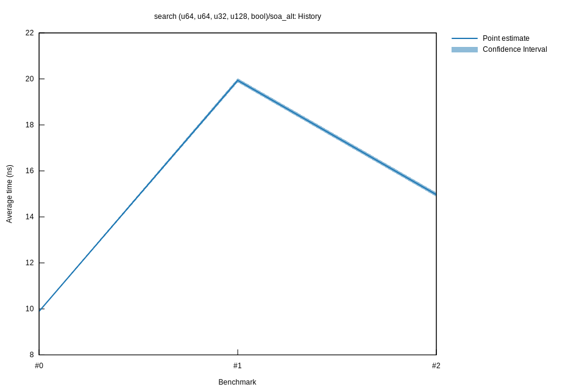

# 22023-02-24T22:40:47+01:00
|
Lower Bound |
Estimate |
Upper Bound |
| Value: |
14.88ns |
14.97ns |
15.06ns |
| Throughput: |
67.21Melem/s |
66.81Melem/s |
66.40Melem/s |
| Change in Value: |
-26.860% |
-25.564% |
-23.763% |
| Change in Throughput: |
+36.724% |
+34.344% |
+31.170% |
No change in performance detected.
# 12023-02-24T16:26:18+01:00
|
Lower Bound |
Estimate |
Upper Bound |
| Value: |
19.85ns |
19.94ns |
20.03ns |
| Throughput: |
50.37Melem/s |
50.16Melem/s |
49.93Melem/s |
| Change in Value: |
+95.813% |
+100.97% |
+104.70% |
| Change in Throughput: |
-48.931% |
-50.242% |
-51.149% |
No change in performance detected.
# 02023-02-24T15:55:04+01:00
|
Lower Bound |
Estimate |
Upper Bound |
| Value: |
9.87ns |
9.89ns |
9.92ns |
| Throughput: |
101.29Melem/s |
101.07Melem/s |
100.80Melem/s |